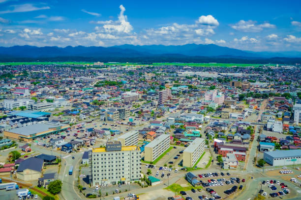

Akita este un oraș situat în nordul Japoniei, faimos pentru peisajele sale montane și tradițiile sale legate de câinii Akita.
Top 10 Atracții din Akita:
- Parcul Senshu
- Grădina Akita Akarenga
- Castelul Akita
- Muzeul de Artizanat Akita
- Templul Yokote
- Muzeul de Artă Akita
- Strada Akita Kanto Matsuri
- Fabrica de Bere Akita
- Grădina Tazawako
- Portul Akita